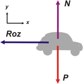

NO ME SALEN
PROBLEMAS RESUELTOS DE FÍSICA DEL CBC
|
|

|
| Adicional No me salen D6*. Hallar la mínima distancia de frenado de un automóvil que marcha a 108 km/h, si los coeficientes de rozamiento entre los neumáticos y el pavimento son µe = 0,6 y µd = 0,3. ¿Qué sucederá si el conductor bloquea las ruedas? Este problema es muy interesante y volveré sobre él un par de veces más. Una de sus virtudes es que combina cinemática con dinámica. |
| |
|
|  |
Arranquemos con la dinámica, eso me va a permitir encontrar una expresión para la aceleración en función de los datos del problema. Dinámica = DCL
Σ Fx = m ax → — Roz = m a
Σ Fy = m ay → N — P = 0
Por otro lado sabemos que...
Roz = μ . N |
|
|
Para cualquiera de los dos coeficientes. Es cierto que si se tratase de un rozamiento estático puede adquirir cualquier valor hasta un máximo de μe . N. Pero en tal caso será ese máximo el que me interesa. De modo que usemos μ sin especificar de cuál se trata y lo analizamos luego en la discusión.
Si combinamos las tres ecuaciones tenemos, A ver... vamos haciéndolo juntos...
P = m g
N = P
N = m g
Roz = μ . m g
— m a = μ . m g
a = — μ . g
Ahora podemos ir a la cinemática del asunto y ver si encontramos una expresión para la distancia mínima de frenado... que acá llamé d. ¿Cómo era esa cuestión de la cinemática? Ah, ya sé... hay que empezar por un esquema.
|
|
 |
|
Se trata de un MRUV, así que volvemos a buscar los modelos de ese movimiento y reemplazamos las constantes del modelo por las constantes del movimiento, que están todas juntitas en el esquema, en el punto 0.
x = v . t — ½ μ . g t2
v = v — μ . g . t
Ahora le pedimos a estas ecuaciones que hablen del punto 1
d = v . t1 — ½ μ . g . t12
0 m/s = v — μ . g . t1
y lógicamente desembocamos en un sistema de dos ecuaciones y dos incógnitas. Acá viene el álgebra. De la segunda despejo t1
t1 = v / μ . g
y esto lo meto en la primera
|
|
| d = |
|
v² |
— |
½ v² |
|
|
|
| μ . g |
μ . g |
|
|
¿te perdiste? Rehacelo vos solo a ver si llegás. Te quedan dos términos semejantes... los podemos juntar en uno sólo, que no es otro que el resutltado que estamos buscando.
d = v² / 2 . μ . g
Ahora reemplazamos por los datos del problema (siempre que puedo hago esto al final, no antes). Veo que el número que obtenga va a ser menor cuanto mayor sea el denominador, de modo que para obtener la distancia mínima voy a reemplazar μ poe e lμe... supongo que así freno en menor distancia. |
|
| |
d = 75 m |
costó, pero llegamos |
|
|
| |
DISCUSION: La primera pregunta es obligada... ¿tiene las unidades que debería tener? Las tiene. ¿Y qué me dice físicamente? Todo: me dice, por ejemplo que si voy más rápido necesito mayor distancia de frenado... tal vez te parezca obvio, pero la física te esta advirtiendo de un peligro en ciernes... porque la distancia mínima necesaria de frenado no aumenta linealmente con la velocidad, ¡sino con su cuadrado! A ver si alguna vez aprendemos los peligros de las altas velocidades.
También me dice que es inversamente proporcional al coeficiente de rozamiento. Es decir... si me percato de la necesidad urgente de frenar el vehículo me conviene conservar la calma y frenar sin bloquear las ruedas. Las ruedas bloqueadas se comportan como patines, y el cálculo hay que hacerlo con el coeficiente dinamico, que siempre es menor que el coeficiente de rozamiento estático, μd < μe. Si queremos una distancia menor (para no llevarnos puesta a la abuelita, nos conviene usar el número mayor en el denominador, o sea, el μe, o sea frenar manteniendo el giro de las ruedas, sin bloquearlas. (Si te interesa el asunto te invito a que leas este breve artículo). Por el mismo motivo me dice es un tanto riesgoso salir a la ruta con las gomas lisas... ejemmm... En nuestro problema, frenar bloqueando las ruedas te cuesta 150 metros, el doble de lo que obtuvimos antes.
Bueno... no quiero seguir dándome rosca. Dice varias cosas más esa expresión, pero vos podés descubrirlas. |
|
 |
| DESAFIO: ¿Qué otra ventaja importante presenta el frenado sin bloqueo de ruedas? |
|
| * Este ejercicio fue tomado de la guía de problemas de Fisica del CBC que se usaba hasta el año 2003. Se trataba del problema 2.9 de la página 146. |
|
| |
|
| Algunos derechos reservados.
Se permite su reproducción citando la fuente. Última actualización abr-07. Buenos Aires, Argentina. |
|
|
|